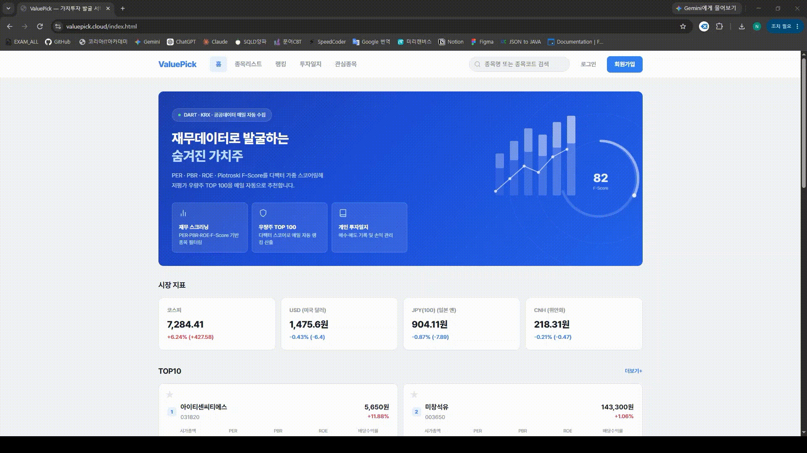

전공이 아닌 개발자로, 방향을 바꾼 이유
전공은 토목공학이었지만, 직접 작성한 코드가 의도대로 동작하는 경험에 몰입해 개발자로 진로를 바꿨습니다.
데이터가 안정적으로 쌓이고, 그 위에서 서비스가 매일 같은 시간에 정확히 돌아가는 것을 가장 중요하게 생각합니다. 눈에 띄는 기능보다 실패해도 다시 도는 배치와 다음 사람이 읽기 좋은 코드에 더 신경 쓰는 백엔드 개발자입니다.
국비 풀스택 개발자 과정에 등록해 Java/Spring 기반 백엔드를 중심으로 학습하며 4인 팀 프로젝트 ValuePick에서 외부 데이터 수집 파이프라인과 스코어링 엔진을 담당했습니다.
외부 API 스펙이나 동작 방식은 문서나 추측이 아니라 실제로 호출한 응답으로 확인한 뒤에만 코드에 반영합니다. DART 계정명 매칭 버그를 표준 코드(account_id) 기반으로 근본 해결한 것도 이런 원칙에서 나온 결과였습니다.
낯선 기술도 문서를 직접 파고들고 실제로 호출·실행해 확인하며 빠르게 적응합니다. 새 기술 스택의 핵심을 빠르게 파악해 바로 프로젝트에 적용합니다.
문제가 생기면 코드부터 고치지 않고 로그와 실제 데이터를 먼저 확인합니다. 원인을 작은 단위로 나눠 검증한 뒤 수정 범위를 정합니다.
입사 후 조직의 기술 스택을 빠르게 익혀 1인분 이상의 역할을 해내고, 지시를 기다리기보다 스스로 개선점을 찾아 제안하는 개발자가 되고 싶습니다.
기술 스택
ValuePick 프로젝트와 개인 학습을 통해 다뤄본 기술입니다.
Backend
Frontend
DevOps
Cloud
자격증
실무 지식을 자격으로도 증명해가고 있습니다.
정보처리기사
국가기술자격 · 정보시스템 개발 전반에 대한 기본 지식 검증
빅데이터분석기사
데이터 전처리·분석·시각화 역량 검증을 위해 준비 중
SQLD
SQL 개발자 자격 · 데이터 모델링과 쿼리 최적화 역량 준비 중
ValuePick
가치투자 지표 기반 종목 스크리닝 서비스 — 4인 팀 프로젝트, 1차 배포 완료
DART·KRX·환율 데이터를 매일 자동 수집해 저평가 우량주 TOP100을 추천하는 서비스
DART 재무제표, 공공데이터포털 주가, KRX 지수, 한국수출입은행 환율을 매일 새벽 자동 수집해 PER·PBR·ROE·Piotroski F-Score 등 투자지표를 계산하고, 멀티팩터 가중 스코어링으로 저평가 우량주 TOP100을 추천합니다. 개인 투자일지(매수/매도 기록, 손익 관리) 기능도 함께 제공합니다.
외부 데이터 수집 파이프라인
KRX(상장종목)·DART(전자공시)·한국수출입은행(환율) 3종 API를 조인해 기업정보 → 재무제표 → 환율 순으로 수집하는 일일 배치 파이프라인 설계 및 구현
주가 수집 2,700회 → 1회
종목별 개별 호출 구조를, 문서 재확인 후 필수 아니던 필터 파라미터를 제거해 날짜 기준 전 종목 일괄 조회로 전환. 일일 호출 한도 초과 문제를 근본 해결
표준 계정 코드 기반 재무 매칭
"영업이익"/"영업이익(손실)"처럼 회사마다 다른 계정명 표기 때문에 값이 0으로 누락되던 문제를, DART 표준 코드(account_id) 매칭으로 근본 해결
투자지표 & TOP100 스코어링
EPS·PER·PBR·ROE·부채비율·모멘텀 등 투자지표와 Piotroski F-Score를 계산하고, 지표별 백분위로 정규화한 다팩터 가중 스코어링으로 TOP100 산출
주요 기능
탭을 눌러 화면별 데모를 확인할 수 있습니다.

홈 · 코스피 지수/환율 위젯, TOP10, 4대 랭킹 — 10초 주기 실시간 갱신
트러블슈팅 하이라이트
개발하면서 실제로 부딪힌 문제와, 그걸 왜 이렇게 풀었는지입니다.
각 항목을 눌러 상세(Problem · Approach · 결과)를 펼쳐볼 수 있습니다.
ISSUE 01TOP100 스코어링 N+1 문제
전체 지표를 순회하며 각 종목의 corpCls·indutyCode를 읽어야 했는데, StockIndicator.company가 지연 로딩(LAZY)이라 지표 건수만큼 추가 SELECT가 나갔음
스코어링용 조회 쿼리를 JOIN FETCH로 재작성해 StockIndicator와 Company를 한 번에 로딩하도록 변경
ISSUE 02DART 수집 전용 비동기 스레드풀 분리
성격이 다른 주가 수집과 DART 수집(재무·기업·배당)을 한 스레드풀로 처리하면, 오래 걸리는 쪽 때문에 다른 작업까지 큐에서 밀릴 수 있었음
dartExecutor(core 8 / max 15 / queue 100)를 별도로 만들고 DART 수집기 3곳에 @Async("dartExecutor")를 적용, 큐를 크게 잡아 수천 건도 거절되지 않게 함
ISSUE 03스코어 — 원값이 아닌 백분위로 정규화
PER은 배수, ROE는 %, 모멘텀은 수익률 등 지표마다 단위·스케일이 달라, 원값을 그대로 가중합하면 스케일이 큰 지표가 점수를 지배함
지표별 순위를 매겨 0~1 백분위로 변환한 뒤 가중치를 곱하도록 변경. null은 지표 유·불리에 따라 항상 최하위로 취급되게 처리
ISSUE 04금융업 F-Score 예외 처리
F-Score는 유동비율·매출총이익률처럼 제조업 재무구조를 전제한 항목이 섞여 있어 금융업에는 구조적으로 맞지 않음
induty_code 앞 2자리(64/65/66)로 금융업을 판별해 F-Score 계산을 건너뛰고 TOP100 필터도 조건 없이 통과. 업종코드 미수집 종목은 후보에서 제외해 부당 탈락 방지
ISSUE 05DART 대량 수집 — 배치·간격·재시도
전체 상장사 재무제표를 수집하면서 API 과호출, 일시적 요청 실패, 중복 저장을 모두 감당해야 했음
100건 단위 페이징 순차 처리 + 회사당 sleep 100ms로 호출 속도 조절, CFS 실패 시 OFS로 재조회, HTTP 실패는 간격을 늘려가며 최대 3회 재시도, 기존 연도 데이터 존재 확인으로 중복 저장 차단
ISSUE 06스케줄러 파이프라인 순서 보장
주가 → 지표 계산 → TOP100은 앞 단계 결과에 의존하는 순차 파이프라인인데, @Scheduled는 각자 독립 트리거라 순서를 강제할 방법이 마땅치 않았음
cron 분(minute) 값을 의도적으로 어긋나게 배치(환율 01:00 → 주가 01:20 → 지표 01:50 → TOP100 02:00), 삭제 작업도 시차를 둬 앞 단계 완료 시간을 확보. 단, 코스피 지수 수집(MarketIndexScheduler)은 01:10에 뒀을 때 KRX 데이터가 아직 확정되지 않아 IllegalStateException으로 매번 실패했기에, 확정 시각(08:00 전후)을 확인하고 파이프라인에서 떼어내 08:30에 독립 실행
ISSUE 07환율 API 빈 응답을 휴일 신호로 재활용
한국수출입은행 환율 API는 주말·공휴일에 별도 플래그 없이 빈 배열만 반환해, 캘린더만으로는 "가장 최근 영업일"을 판단할 수 없었음
빈 응답이면 예외를 던지고, 이를 캐치해 하루씩 거슬러 올라가며 재탐색(최대 10일). DB에 저장된 날짜가 있으면 API를 재호출하지 않고 재사용
ISSUE 08종목명 필터링 — 법령 근거로 매칭 구분
리츠·스팩을 contains로만 걸러내면 "메리츠"·"블리츠" 같은 무관한 종목까지 오탐돼 화이트리스트를 하드코딩해야 했음
부동산투자회사법상 리츠는 상호 끝에 "리츠"를 붙이므로 endsWith("리츠"), 자본시장법상 스팩은 상호 어디든 "스팩"이 들어가므로 contains("스팩")로 구분 적용
모바일 화면
반응형으로 모바일 환경에서도 동일한 기능을 제공합니다.
함께 일할 기회를 찾고 있습니다
빠르게 배우고, 실제로 확인한 것만 말하는 백엔드 개발자입니다. 이력서와 상세 이력이 필요하시면 메일 주세요. 24시간 내 회신합니다.